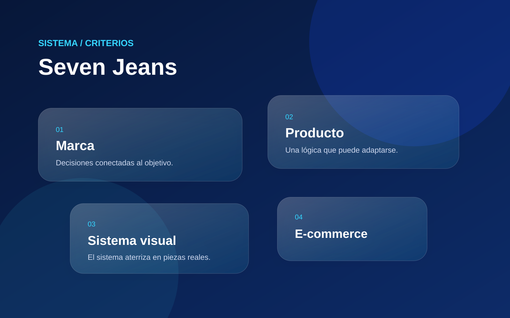
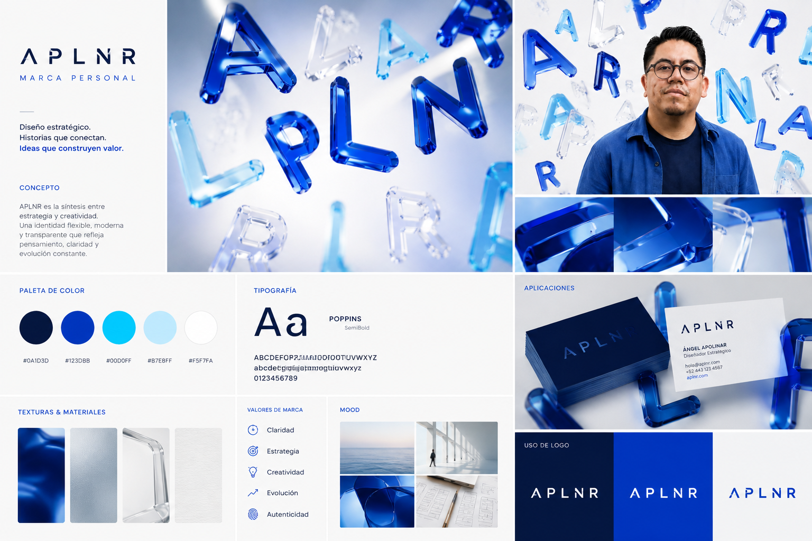
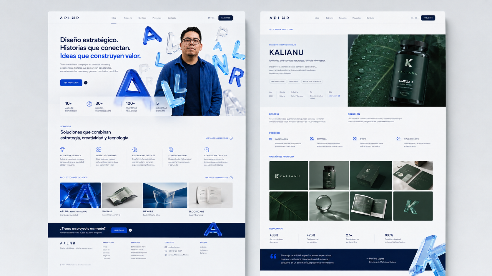

Un mismo criterio
La marca puede cambiar de formato sin sentirse distinta.
Construir una marca consistente del producto a la experiencia digital.
Seven Jeans vive en producto, retail, fotografía, campañas y e-commerce. El trabajo fue crear criterios que mantuvieran la marca reconocible en todos esos puntos de contacto.

Criterios visuales claros para trabajar distintos productos, líneas y canales sin perder identidad.
Definición visual, sistemas de producto, packaging y avíos, punto de venta, e-commerce, campañas y supervisión de implementación.
La estructura se adaptó al proyecto para convertir información y decisiones en una solución implementable.
Un sistema de marca útil debe resolver diferencias sin borrar la identidad.
La marca puede cambiar de formato sin sentirse distinta.
Las reglas reducen improvisación y facilitan nuevas aplicaciones.
Producto, retail y digital se consideran desde el inicio.
Una selección del sistema, el proceso y sus aplicaciones.



